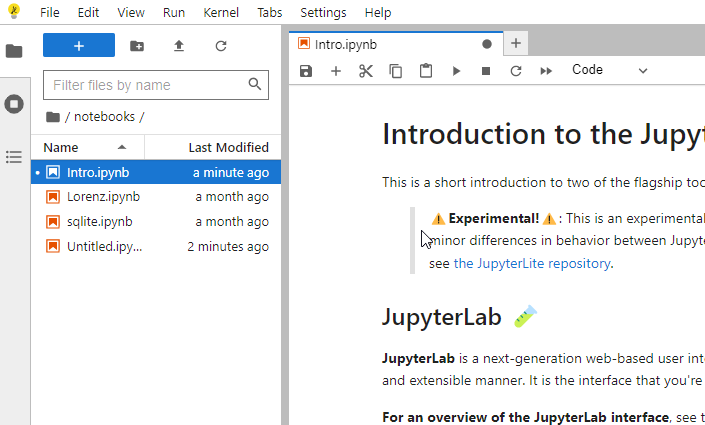
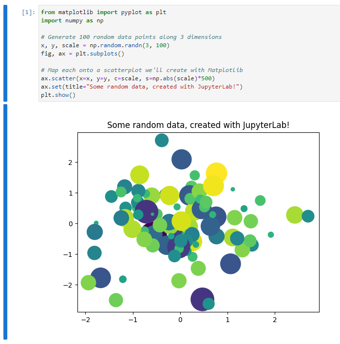

1 Introduction
In this Chapter we will discuss - What is Machine Learning? - What do typical Machine Learning problems look like? - What is the basic structure of Machine Learning models? - What is the basic work flow to use Machine Learning to solve problems? - Some supplementary materials, such as Linear Algebra and Python.
2 What is Machine Learning?
Machine Learning is the science (and art) of programming computers so they can learn from data {cite:p}Ger2019.
Here is a slightly more general definition:
[Machine Learning is the] field of study that gives computers the ability to learn without being explicitly programmed.
-- Arthur Samuel, 1959This “without being explicitly programmed to do so” is the essential difference between Machine Learning and usual computing tasks. The usual way to make a computer do useful work is to have a human programmer write down rules — a computer program — to be followed to turn input data into appropriate answers. Machine Learning turns this around: the machine looks at the input data and the expected task outcome, and figures out what the rules should be. A Machine Learning system is trained rather than explicitly programmed. It’s presented with many examples relevant to a task, and it finds statistical structure in these examples that eventually allows the system to come up with rules for automating the task {cite:p}Cho2021.
2.1 Types of Machine Learning Systems
There are many different types of Machine Learning systems that it is useful to classify them in braod categories, based on different criteria. These criteria are not exclusive, and you can combine them in any way you like.
The most popular criterion for Machine Learning classification is the amount and type of supervision they get during training. In this case there are four major types.
Supervised Learning
The training set you feed to the algorithm includes the desired solutions. The machines learn from the data to alter the model to get the desired output. The main task for Supervised Learning is classification and regression.
Unsupervised Learning
In Unsupervised Learning, the data provided doesn't have class information or desired solutions. We just want to dig some information directly from those data themselves. Usually Unsupervised Learning is used for clustering and dimension reduction.
Reinforcement Learning
In Reinforcement Learning, there is a reward system to measure how well the machine performs the task, and the machine is learning to find the strategy to maximize the rewards. Typical examples here include gaming AI and walking robots.
Semisupervised Learning
This is actually a combination of Supervised Learning and Unsupervised Learning, that it is usually used to deal with data that are half labelled. 2.1.1 Tasks for Supervised Learning
As mentioned above, for Supervised Learning, there are two typical types of tasks:
Classification
It is the task of predicting a discrete class labels. A typical classification problem is to see an handwritten digit image and recognize it.
Regression
It is the task of predicting a continuous quantity. A typical regression problem is to predict the house price based on various features of the house.There are a lot of other tasks that are not directly covered by these two, but these two are the most classical Supervised Learning tasks.
2.1.2 Classification based on complexity
Along with the popularity boost of deep neural network, there comes another classificaiton: shallow learning vs. deep learning. Basically all but deep neural network belongs to shallow learning. Although deep learning can do a lot of fancy stuffs, shallow learning is still very good in many cases. When the performance of a shallow learning model is good enough comparing to that of a deep learning model, people tend to use the shallow learning since it is usually faster, easier to understand and easier to modify.
3 Basic setting for Machine learning problems
3.1 Input and output data structure
Since we are dealing with Supervised Classification problems, the desired solutions are given. These desired solutions in Classification problems are also called labels. The properties that the data are used to describe are called features. Both features and labels are usually organized as row vectors.
Example 3.1 The example is extracted from {cite:p}Har2012. There are some sample data shown in the following table. We would like to use these information to classify bird species.
```ofoauoxalsot Bird species classification based on four features :header-rows: 1
- Weight (g)
- Wingspan (cm)
- Webbed feet?
- Back color
- Species
- 1000.1
- 125.0
- No
- Brown
- Buteo jamaicensis
- 3000.7
- 200.0
- No
- Gray
- Sagittarius serpentarius
- 3300.0
- 220.3
- No
- Gray
- Sagittarius serpentarius
- 4100.0
- 136.0
- Yes
- Black
- Gavia immer
- 3.0
- 11.0
- No
- Green
- Calothorax lucifer
- 570.0
- 75.0
- No
- Black
- Campephilus principalis ``` The first four columns are features, and the last column is the label. The first two features are numeric and can take on decimal values. The third feature is binary that can only be \(1\) (Yes) or \(0\) (No). The fourth feature is an enumeration over the color palette. You may either treat it as categorical data or numeric data, depending on how you want to build the model and what you want to get out of the data. In this example we will use it as categorical data that we only choose it from a list of colors (\(1\) — Brown, \(2\) — Gray, \(3\) — Black, \(4\) — Green).
Then we are able to transform the above data into the following form:
```ofoauoxalsot Vectorized Bird species data :header-rows: 1
- Features
- Labels
- \(\begin{bmatrix}1001.1 & 125.0 & 0 & 1 \end{bmatrix}\)
- \(1\)
- \(\begin{bmatrix}3000.7 & 200.0 & 0 & 2 \end{bmatrix}\)
- \(2\)
- \(\begin{bmatrix}3300.0 & 220.3 & 0 & 2 \end{bmatrix}\)
- \(2\)
- \(\begin{bmatrix}4100.0 & 136.0 & 1 & 3 \end{bmatrix}\)
- \(3\)
- \(\begin{bmatrix}3.0 & 11.0 & 0 & 4 \end{bmatrix}\)
- \(4\)
- \(\begin{bmatrix}570.0 & 75.0 & 0 & 3 \end{bmatrix}\)
- \(5\) ```
Then the Supervised Learning problem is stated as follows: Given the features and the labels, we would like to find a model that can classify future data.
3.2 Parameters and hyperparameters
A model parameter is internal to the model and its value is learned from the data.
A model hyperparameter is external to the model and its value is set by people.
For example, assume that we would like to use Logistic regression to fit the data. We set the learning rate is 0.1 and the maximal iteration is 100. After the computations are done, we get a the model
\[
y = \sigma(0.8+0.7x).
\] The two cofficients \(0.8\) and \(0.7\) are the parameters of the model. The model Logistic regression, the learning rate 0.1 and the maximal iteration 100 are all hyperparametrs. If we change to a different set of hyperparameters, we may get a different model, with a different set of parameters.
The details of Logistic regression will be discussed in {numref}Chapter %s<chapter-log-reg>.
3.3 Evaluate a Machine Learning model
Once the model is built, how do we know that it is good or not? The naive idea is to test the model on some brand new data and check whether it is able to get the desired results. The usual way to achieve it is to split the input dataset into three pieces: training set, validation set and test set.
The model is initially fit on the training set, with some arbitrary selections of hyperparameters. Then hyperparameters will be changed, and new model is fitted over the training set. Which set of hyperparameters is better? We then test their performance over the validation set. We could run through a lot of different combinations of hyperparameters, and find the best performance over the validation set. After we get the best hyperparameters, the model is selcted, and we fit it over the training set to get our model to use.
To compare our model with our models, either our own model using other algorithms, or models built by others, we need some new data. We can no longer use the training set and the validation set since all data in them are used, either for training or for hyperparameters tuning. We need to use the test set to evaluate the “real performance” of our data.
To summarize:
- Training set: used to fit the model;
- Validation set: used to tune the hyperparameters;
- Test set: used to check the overall performance of the model.
The validation set is not always required. If we use cross-validation technique for hyperparameters tuning, like sklearn.model_selection.GridSearchCV(), we don’t need a separated validation set. In this case, we will only need the training set and the test set, and run GridSearchCV over the training set. The cross-validation will be discussed in {numref}Section %s<section-cross-validation>.
The sizes and strategies for dataset division depends on the problem and data available. It is often recommanded that more training data should be used. The typical distribution of training, validation and test is \((6:3:1)\), \((7:2:1)\) or \((8:1:1)\). Sometimes validation set is discarded and only training set and test set are used. In this case the distribution of training and test set is usually \((7:3)\), \((8:2)\) or \((9:1)\).
3.4 Workflow in developing a machine learning application
The workflow described below is from {cite:p}Har2012.
- Collect data.
- Prepare the input data.
- Analyze the input data.
- Train the algorithm.
- Test the algorithm.
- Use it.
In this course, we will mainly focus on Step 4 as well Step 5. These two steps are where the “core” algorithms lie, depending on the algorithm. We will start from the next Chapter to talk about various Machine Learning algorithms and examples.
4 Python quick guide
4.1 Python Notebook
We mainly use Python Notebook (.ipynb) to write documents for this course. Currently all main stream Python IDE support Python Notebook. All of them are not entirely identical but the differences are not huge and you may choose any you like.
One of the easiest ways to use Python Notebook is through JupyterLab. The best part about it is that you don’t need to worry about installation and configuration in the first place, and you can directly start to code.
Click the above link and choose JupyterLab. Then you will see the following page.

The webapp you just started is called JupyterLite. This is a demo version. The full JupyterLab installation instruction can also be found from the link.
There is a small button + under the tab bar. This is the place where you click to start a new cell. You may type codes or markdown documents or raw texts in the cell according to your needs. The drag-down menu at the end of the row which is named Code or Markdown or Raw can help you make the switch. Markdown is a very simple light wighted language to write documents. In most cases it behaves very similar to plain texts. Codes are just regular Python codes (while some other languages are supported). You may either use the triangle button in the menu to execute the codes, or hit shift + enter.

JupyterLite contains a few popular packages. Therefore it is totally ok if you would like to play with some simple things. However since it is an online evironment, it has many limitations. Therefore it is still recommended to set up a local environment once you get familiar with Python Notebook. Please check the following links for some popular choices for notebooks and Python installations in general, either local and online.
4.2 Python fundamentals
We will put some very basic Python commands here for you to warm up. More advanced Python knowledge will be covered during the rest of the semester. The main reference for this part is {cite:p}Har2012. ### Indentation Python is using indentation to denote code blocks. It is not convienent to write in the first place, but it forces you to write clean, readable code.
By the way, the if and for block are actually straightforward.
:gutter: 2
:::{grid-item-card} One! ftvgosxficwq python if jj < 3: jj = jj print("It is smaller than 3.")
:::{grid-item-card} Two! ftvgosxficwq python if jj < 3: jj = jj print("It is smaller than 3.") ::: ::::
:gutter: 2
:::{grid-item-card} Three! ftvgosxficwq python for i in range(3): i = i + 1 print(i)
:::{grid-item-card} Four! ftvgosxficwq python for i in range(3): i = i + 1 print(i) ::: :::: Please tell the differences between the above codes.
4.2.1 list and dict
Here are some very basic usage of lists of dictionaries in Python. ```ftvgosxficwq python newlist = list() newlist.append(1) newlist.append(‘hello’) print(newlist)
newlisttwo = [1, ‘hello’] print(newlisttwo)
newdict = dict() newdict[‘one’] = ‘good’ newdict[1] = ‘yes’ print(newdict)
newdicttwo = {‘one’: ‘good’, 1: ‘yes’} print(newdicttwo)
### Loop through lists
When creating `for` loops we may let Python directly loop through lists. Here is an example. The code is almost self-explained.
```{code-block} python
alist = ['one', 2, 'three', 4]
for item in alist:
print(item)4.2.2 Reading files
There are a lot of functions that can read files. The basic one is to read any files as a big string. After we get the string, we may parse it based on the structure of the data.
The above process sounds complicated. That’s why we have so many different functions reading files. Usually they focus on a certain types of files (e.g. spreadsheets, images, etc..), parse the data into a particular data structure for us to use later.
I will mention a few examples.
csvfiles andexcelfiles Both of them are spreadsheets format. Usually we usepandas.read_csvandpandas.read_excelboth of which are from the packagepandasto read these two types of files.images Images can be treated as matrices, that each entry represents one pixel. If the image is black/white, it is represented by one matrix where each entry represents the gray value. If the image is colored, it is represented by three matrices where each entry represents one color. To use which three colors depends on the color map.
rgbis a popular choice.In this course when we need to read images, we usually use
matplotlib.pyplot.imreadfrom the packagematplotliborcv.imreadfrom the packageopencv..jsonfiles.jsonis a file format to store dictionary type of data. To read ajsonfile and parse it as a dictionary, we needjson.loadfrom the packagejson.
4.2.3 Writing files
4.2.4 Relative paths
In this course, when reading and writing files, please keep all the files using relative paths. That is, only write the path starting from the working directory.
Consider the following tasks:
1. Your working directory is `C:/Users/Xinli/projects/`.
2. Want to read a file `D:/Files/example.csv`.
3. Want to generate a file whose name is `result.csv` and put it in a subfoler named `foldername`.
To do the tasks, don't directly run the code `pd.read_csv('D:/Files/example.csv')`. Instead you should first copy the file to your working directory `C:/Users/Xinli/projects/`, and then run the following code.
```{code-block} python
import pandas as pd
df = pd.read_csv('example.csv')
df.to_csv('foldername/result.csv')
```
Please pay attention to how the paths are written.4.2.5 .
- class and packages.
- Get access to attributes and methods
- Chaining dots.
4.3 Some additional topics
4.3.1 Package management and Virtual environment
condaconda createconda create --name myenvconda create --name myenv python=3.9conda create --name myenv --file spec-file.txt
conda installconda install -c conda-forge numpy
conda activate myenvconda listconda list numpyconda list --explicit > spec-file.txt
conda env list
pip/venvpython -m venv newenvnewenv\Scripts\activatepip installpip freeze > requirements.txtpip install -r /path/to/requirements.txtdeactivate
4.3.2 Version Control
Git- Install
git config --listgit config --global user.name "My Name"git config --global user.email "myemail@example.com"
GitHub
5 Exercises
These exercises are from {cite:p}Klo2021, {cite:p}Ger2019 and {cite:p}Har2012.
5.1 Python Notebook
```hlwnldlkzx Hello World!
Please set up a Python Notebook environment and type print('Hello World!').
```{exercise}
Please set up a Python Notebook and start a new virtual environment and type `print('Hello World!')`.5.2 Basic Python
```hlwnldlkzx Play with lists :label: ex1helloworld
Please complete the following tasks. - Write a for loop to print values from 0 to 4. - Combine two lists ['apple', 'orange'] and ['banana'] using +. - Sort the list ['apple', 'orange', 'banana'] using sorted().
````{solution} ex1helloworld
:class: dropdown
```{code-block} python
for i in range(5):
print(i)
newlist = ['apple', 'orange'] + ['banana']
sorted(['apple', 'orange', 'banana'])Please be careful about the last line. sorted() doesn’t change the original list. It create a new list. There are some Python functions which change the inputed object in-place. Please read documents on all packages you use to get the desired results.
```{exercise} Play with list, dict and pandas.
:label: ex1list
Please complete the following tasks.
- Create a new dictionary `people` with two keys `name` and `age`. The values are all empty list.
- Add `Tony` to the `name` list in `people`.
- Add `Harry` to the `name` list in `people`.
- Add number 100 to the `age` list in `people`.
- Add number 10 to the `age` list in `people`.
- Find all the keys of `people` and save them into a list `namelist`.
- Convert the dictionary `people` to a Pandas DataFrame `df`.
```
````{solution} ex1list
:class: dropdown
```{code-block} python
import pandas as pd
people = {'name': list(), 'age': list()}
people['name'].append('Tony')
people['name'].append('Harry')
people['age'].append(100)
people['age'].append(10)
namelist = people.keys()
df = pd.DataFrame(people)
```````hlwnldlkzx The dataset iris :label: ex1iris
ftvgosxficwq python from sklearn.datasets import load_iris iris = load_iris() Please explore this dataset. - Please get the features for iris and save it into X as an numpy array. - What is the meaning of these features? - Please get the labels for iris and save it into y as an numpy array. - What is the meaning of labels?
````{solution} ex1iris
:class: dropdown
We first find that `iris` is a dictionary. Then we can look at all the keys by `iris.keys()`. The interesting keys are `data`, `target`, `target_names` and `feature_names`. We can also read the description of the dataset by looking at `DESCR`.
```{code-block} python
X = iris['data']
print(iris['feature_names'])
y = iris['target']
print(iris['target'])
```
Since the data is already saved as numpy arrays, we don't need to do anything to change its type.```hlwnldlkzx Play with Pandas :label: ex1pandastitanic Please download the Titanic data file from {Download}here<./assests/datasets/titanic.csv>`. Then follow the instructions to perform the required tasks.
- Use
pandas.read_csvto read the dataset and save it as a dataframe objectdf. - Change the values of the
Sexcolumn thatmaleis0andfemaleis1. - Pick the columns
Pclass,Sex,Age,Siblings/Spouses Aboard,Parents/Children AboardandFareand transform them into a 2-dimensionalnumpy.ndarray, and save it asX. - Pick the column
Survivedand transform it into a 1-dimensionalnumpy.ndarrayand save it asy.
````{solution} ex1pandastitanic
:class: dropdown
Not yet done!